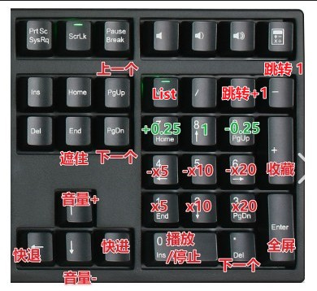

-
{{ index + 1 }}. {{ video }}
读取
保存
清空
{{ favorite }}
http://172.28.19.94:8080/
http://172.28.19.164:8080/
http://172.26.37.211:8080/

1、全屏模式
双击视频中间区域或Enter：进入或退出全屏模式。
2、快进/快进
向右划动或 → ：快进（以“进/退”滑块设置的时间为步长）。
向左划动或 ← ：快退（以“进/退”滑块设置的时间为步长）。
按小键盘【1】 x5播放；【2】 x10播放，【3】 x20播放
【4】 x-5播放；【5】 x-10播放，【5】 x-20播放
【0】播放/暂停
3、播放控制
Enter或小键盘【0】：播放/暂停。
空格：播放/暂停。
←：快退。
→：快进。
↑：音量增加。
切换视频
双击左侧区域：切换到上一个视频。
双击右侧区域或小键盘【.】：切换到下一个视频。
使用下拉菜单：在控制面板的“列表”中选择视频。
4、调整音量
滑动操作：在视频区域向上滑增大音量，向下滑减小音量，屏幕会显示音量百分比。
5、调节播放速度
滑块操作：在控制面板的“速度”滑块调整播放速度（范围：-5x - 10x）。
按小键盘【7】-0.25倍，【8】正常，【9】+0.25倍
6、调节快进/快退
滑块操作：在控制面板的“进/退”滑块调整跳转速度（范围：5 - 90）。
7、播放列表收藏
按小键盘【+】收藏当前播放视频。
8、隐私设置
按【End】暂停播放并遮住视频内容。